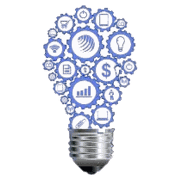

Understand technology with guidance instead of guesswork.
- Learning sessions and workshops
- A curated Learning Hub
- Peer help when you’re stuck

Nepalgunj IT Students CommunityNISC is a free community for IT students, beginners, creators and technology enthusiasts in Nepalgunj. It’s where you learn with others, meet people who share your interests, and build things you’re proud of.
Learning technology on your own can be slow and confusing. NISC gives you people to learn with, direction on what to learn next, and real things to build.
Understand technology with guidance instead of guesswork.
Meet students who care about the same things you do.
Turn what you learn into projects you can show.
Get ready for what comes after the classroom.
NISC, the Nepalgunj IT Students Community, brings together students who are curious about technology. Some study IT. Some are just starting out. Some come from completely different fields. What connects them is the wish to learn, share and build together.
From focused learning sessions to project teams and volunteering, every NISC activity is built around something students actually need.
NISC has already turned its idea into action. Every milestone is kept on a public timeline so the community’s history is never lost.
Upcoming events, open registrations and the latest from NISC Updates.
You don’t need to be an expert. You just need the willingness to learn, contribute, and grow.
Work with other members, or showcase something you’ve already made.
ProjectsEverything the community learns, builds and remembers, collected in one place.
Free, well-known resources and step-by-step starter paths for web development, cybersecurity, AI, design, Git and careers.
Upcoming sessions and the full archive.
What NISC members build.
Verified internships, hackathons and scholarships.
The living history of NISC.
Photos from NISC sessions and activities, organised by event.
Experiences in members’ own words.
The people behind NISC.
You just need the willingness to learn, contribute, and grow. NISC is free to join and open to every curious student in Nepalgunj.